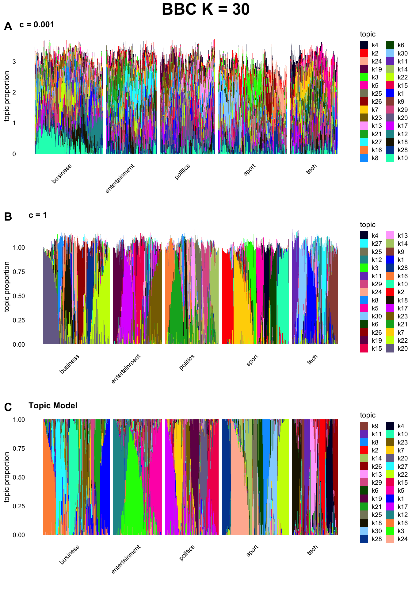

Last updated: 2025-02-26
Checks: 6 1
Knit directory: log1p_experiments/
This reproducible R Markdown analysis was created with workflowr (version 1.7.1). The Checks tab describes the reproducibility checks that were applied when the results were created. The Past versions tab lists the development history.
The R Markdown is untracked by Git. To know which version of the R
Markdown file created these results, you’ll want to first commit it to
the Git repo. If you’re still working on the analysis, you can ignore
this warning. When you’re finished, you can run
wflow_publish to commit the R Markdown file and build the
HTML.
Great job! The global environment was empty. Objects defined in the global environment can affect the analysis in your R Markdown file in unknown ways. For reproduciblity it’s best to always run the code in an empty environment.
The command set.seed(20240402) was run prior to running
the code in the R Markdown file. Setting a seed ensures that any results
that rely on randomness, e.g. subsampling or permutations, are
reproducible.
Great job! Recording the operating system, R version, and package versions is critical for reproducibility.
Nice! There were no cached chunks for this analysis, so you can be confident that you successfully produced the results during this run.
Great job! Using relative paths to the files within your workflowr project makes it easier to run your code on other machines.
Great! You are using Git for version control. Tracking code development and connecting the code version to the results is critical for reproducibility.
The results in this page were generated with repository version 52c8d18. See the Past versions tab to see a history of the changes made to the R Markdown and HTML files.
Note that you need to be careful to ensure that all relevant files for
the analysis have been committed to Git prior to generating the results
(you can use wflow_publish or
wflow_git_commit). workflowr only checks the R Markdown
file, but you know if there are other scripts or data files that it
depends on. Below is the status of the Git repository when the results
were generated:
Ignored files:
Ignored: .DS_Store
Ignored: .Rhistory
Ignored: data/.DS_Store
Untracked files:
Untracked: analysis/bbc3.Rmd
Note that any generated files, e.g. HTML, png, CSS, etc., are not included in this status report because it is ok for generated content to have uncommitted changes.
There are no past versions. Publish this analysis with
wflow_publish() to start tracking its development.
dat <- readr::read_csv("~/Downloads/bbc_news_text_complexity_summarization.csv")Rows: 2127 Columns: 7
── Column specification ────────────────────────────────────────────────────────
Delimiter: ","
chr (4): text, labels, text_rank_summary, lsa_summary
dbl (3): no_sentences, Flesch Reading Ease Score, Dale-Chall Readability Score
ℹ Use `spec()` to retrieve the full column specification for this data.
ℹ Specify the column types or set `show_col_types = FALSE` to quiet this message.library(tm)Loading required package: NLPlibrary(SnowballC)
my_corpus <- VCorpus(VectorSource(dat$text))
addspace <- content_transformer(function(x, pattern) {
return(gsub(pattern, " ", x))
})
my_corpus <- tm_map(my_corpus, addspace, "-")
my_corpus <- tm_map(my_corpus, removeNumbers)
# Transform to lower case (need to wrap in content_transformer)
my_corpus <- tm_map(my_corpus,content_transformer(tolower))
my_corpus <- tm_map(my_corpus, removeWords, stopwords("SMART"))
my_corpus <- tm_map(my_corpus, removePunctuation)
my_corpus <- tm_map(my_corpus, stripWhitespace)
my_corpus <- tm_map(my_corpus, stemDocument)
dtm <- DocumentTermMatrix(my_corpus)
dtm2 <- Matrix::sparseMatrix(
i = dtm$i,
j = dtm$j,
x = dtm$v
)
colnames(dtm2) <- dtm$dimnames$Terms
words_to_use <- which(Matrix::colSums(dtm2>0)>4)
dtm2 <- dtm2[,words_to_use]
s <- Matrix::rowSums(dtm2)
s <- s / mean(s)
library(fastTopics)
library(passPCA)
library(Matrix)
library(dplyr)
Attaching package: 'dplyr'
The following objects are masked from 'package:stats':
filter, lag
The following objects are masked from 'package:base':
intersect, setdiff, setequal, union#cc_vec <- c(1e3)
n <- nrow(dtm2)
p <- ncol(dtm2)
K <- 30
hoyer_sparsity <- function(x) {
n <- length(x)
(1 / (sqrt(n) - 1)) * (sqrt(n) - (sum(x) / (sqrt(sum(x ^ 2)))))
}
fit_list <- list()
cc_vec <- c(1e-3, 1e-2, 1e-1, 1, 1e1, 1e2, 1e3)
for (cc in cc_vec) {
fit_list[[as.character(cc)]] <- readr::read_rds(
glue::glue(
"~/Documents/data/bbc_log1p_c{cc}_k{K}_exact_1000_iter.rds"
)
)
colnames(fit_list[[as.character(cc)]]$LL) <- paste0("k", 1:K)
fit_list[[as.character(cc)]]$l_sparsity <- apply(
fit_list[[as.character(cc)]]$LL, 2, hoyer_sparsity
)
fit_list[[as.character(cc)]]$f_sparsity <- apply(
fit_list[[as.character(cc)]]$FF, 2, hoyer_sparsity
)
fit_list[[as.character(cc)]]$cor_mat <- cor(fit_list[[as.character(cc)]]$FF, method = "spearman")
}
fit_list[["Inf"]] <- readr::read_rds(
glue::glue("~/Documents/data/bbc_topic_model_k{K}_exact_1000_iter.rds")
)
fit_list[["Inf"]]$Ls <- Matrix::Diagonal(x = 1/s) %*% fit_list[["Inf"]]$L
fit_list[["Inf"]]$l_sparsity <- apply(
fit_list[["Inf"]]$Ls, 2, hoyer_sparsity
)
fit_list[["Inf"]]$f_sparsity <- apply(
fit_list[["Inf"]]$F, 2, hoyer_sparsity
)
fit_list[["Inf"]]$cor_mat <- cor(fit_list[["Inf"]]$F, method = "spearman")
l_sparsity_vec <- unlist(lapply(fit_list, function(x) {median(x$l_sparsity)}))
f_sparsity_vec <- unlist(lapply(fit_list, function(x) {median(x$f_sparsity)}))
cor_vec <- unlist(
lapply(fit_list, function(x) {median(x$cor_mat[lower.tri(x$cor_mat)])})
)
df_sparsity_l <- data.frame(
cc = as.numeric(names(l_sparsity_vec)),
sparsity = l_sparsity_vec
) %>% filter(is.finite(cc))
df_sparsity_f <- data.frame(
cc = as.numeric(names(f_sparsity_vec)),
sparsity = f_sparsity_vec
) %>% filter(is.finite(cc))
df_cor <- data.frame(
cc = as.numeric(names(cor_vec)),
correlation = cor_vec
) %>% filter(is.finite(cc))
library(ggpubr)Loading required package: ggplot2
Attaching package: 'ggplot2'
The following object is masked from 'package:NLP':
annotatelibrary(ggplot2)plot_list <- list()
cc_vec <- c(1e-3, 1)
for (cc in cc_vec) {
plot_list[[glue::glue("c = {cc}")]] <- normalized_structure_plot(
fit_list[[as.character(cc)]],
grouping = dat$labels,gap = 25,perplexity = 70,n = Inf, font.size = 12
) + ggtitle(glue::glue("c = {cc}"))
}Running tsne on 503 x 30 matrix.Running tsne on 369 x 30 matrix.Running tsne on 403 x 30 matrix.Running tsne on 505 x 30 matrix.Running tsne on 347 x 30 matrix.Running tsne on 503 x 30 matrix.Running tsne on 369 x 30 matrix.Running tsne on 403 x 30 matrix.Running tsne on 505 x 30 matrix.Running tsne on 347 x 30 matrix.plot_list[["Topic Model"]] <- structure_plot(
fit_list[["Inf"]],
grouping = dat$labels,gap = 25,perplexity = 70,n = Inf,font.size = 12
) + ggtitle("Topic Model")Running tsne on 503 x 30 matrix.Running tsne on 369 x 30 matrix.Running tsne on 403 x 30 matrix.Running tsne on 505 x 30 matrix.Running tsne on 347 x 30 matrix.g <- ggarrange(
plotlist = plot_list,
ncol = 1,
labels = "AUTO"
)
g <- annotate_figure(g,
top = text_grob("BBC K = 30", size = 20, face = "bold"))g
get_top_words <- function(f, n_top = 20) {
words <- names(sort(f, decreasing = TRUE))[1:n_top]
pasted_words <- paste(words, collapse = ", ")
return(pasted_words)
}
get_distinctive_words <- function(FF, n_top = 20) {
FF <- passPCA:::normalize_bars(FF)
colnames(FF) <- paste0("k_", 1:ncol(FF))
kw_vec <- c()
for (k in 1:ncol(FF)) {
kw <- fastTopics:::get_distinctive_features(
effects_matrix = FF,
k = glue::glue("k_{k}"),
n = n_top,
feature_sign = "positive"
)
kw_vec <- c(
kw_vec,
paste(kw, collapse = ", ")
)
}
return(
data.frame(
factor = paste0("k_", 1:ncol(FF)),
distinctive_words = kw_vec
)
)
}
top_words <- apply(fit_list$`0.001`$FF, 2, get_top_words)
top_words <- as.data.frame(top_words)
colnames(top_words) <- c("top_words")
top_words$factor <- rownames(top_words)
rownames(top_words) <- NULL
top_words <- top_words %>% dplyr::select(c("factor", "top_words"))
distinctive_words <- get_distinctive_words(fit_list$`0.001`$FF)
word_df <- top_words %>% dplyr::inner_join(distinctive_words)Joining with `by = join_by(factor)`knitr::kable(word_df)| factor | top_words | distinctive_words |
|---|---|---|
| k_1 | patent, falcon, poppin, chancellor, bill, handheld, lord, blair, spur, ministeri, cunningham, linux, sourc, marr, parliament, intervent, book, gameboy, outlin, gazprom | poppin, goat, ministeri, thin, falcon, patent, cameron, marr, roman, concili, tinker, clare, griffith, impresario, lane, cunningham, compuls, mould, dame, poland |
| k_2 | penalti, minut, sub, yard, volley, corner, shot, card, pass, save, ball, header, lob, rang, fuller, blast, mansfield, box, bond, chip | lob, sub, yard, minut, volley, corner, snatch, mansfield, header, unmark, pass, rang, curl, despair, penalti, shot, blast, narrowli, blade, thump |
| k_3 | wale, rugbi, england, ireland, twickenham, franc, squad, captain, coach, robinson, woodward, scrum, lion, slam, zealand, capt, player, driscol, scotland, flanker | twickenham, capt, scrum, captain, rugbi, eddi, lion, woodward, lansdown, olli, resurg, flanker, rbs, squad, england, coach, hodgson, stutter, lock, shirt |
| k_4 | gameplay, game, enemi, fiat, slick, addict, niggl, feel, bit, anim, authent, slice, parmalat, wonder, urban, atmospher, flair, virtual, alien, learn | gameplay, niggl, enemi, slick, alien, weird, liter, annoy, imagin, notion, joystick, midst, slice, authent, meaningless, beast, misunderstood, addict, sens, arcad |
| k_5 | user, softwar, virus, program, web, malici, browser, site, mail, spam, microsoft, comput, window, messag, spywar, infect, internet, updat, googl, file | trojan, user, cluley, updat, savvi, phish, browser, circul, symantec, softwar, program, messag, site, firewal, steal, version, bulletin, beta, address, click |
| k_6 | broadcast, broadband, viewer, channel, satellit, freeview, terrestri, televis, radio, ofcom, fcc, station, telco, content, programm, cabl, web, audienc, sky, video | broadcast, broadband, viewer, channel, hook, terrestri, freeview, upload, explos, adsl, televis, eastend, aol, radio, jupit, djs, content, station, satellit, ntl |
| k_7 | gadget, soni, portabl, mini, devic, appl, ipod, mac, chip, psp, consum, photo, store, mobil, camera, ces, samsung, dvd, player, storag | gadget, portabl, compat, soni, lcd, expo, devic, samsung, watcher, plasma, walkman, storag, jukebox, tvs, psp, ipod, mini, flash, keyboard, ubiquit |
| k_8 | peer, nissan, roddick, moya, dvds, carmak, merced, mitsubishi, job, pension, motor, worker, daimlerchrysl, piraci, airlin, nadal, pirat, appoint, tuc, dvd | peer, nissan, thwart, tuc, appoint, piraci, dvds, worker, phonograph, overhead, opel, rent, rio, systemat, daimlerchrysl, job, edonkey, napster, kinnock, dal |
| k_9 | mobil, phone, india, handset, indian, vodafon, telecom, mda, telecommun, gsm, bellami, mirza, ericsson, mms, telephon, rupe, bet, boe, bollywood, mci | landlin, mda, handset, wap, phone, mobil, gprs, gsm, rocket, mms, telecommun, ericsson, rack, bellami, monsoon, overtak, orang, sms, kbps, cann |
| k_10 | sharehold, takeov, investor, stock, deutsch, share, bank, financi, stake, invest, creditor, bid, debt, merger, £bn, firm, boers, equiti, exchang, insur | sharehold, takeov, financi, equiti, eighteen, investor, deposit, stake, brokerag, enron, bid, consolid, share, bidder, tycoon, transact, largest, buyout, stock, magnier |
| k_11 | turkey, european, franc, rebat, cyprus, germani, brussel, robot, referendum, switzerland, kerr, turkish, commiss, constitut, lisbon, barroso, republ, french, eurozon, union | barroso, brussel, criteria, luxembourg, veto, turkey, commiss, germani, cyprus, referendum, switzerland, rebat, allay, membership, enlarg, unjustifi, european, denmark, treati, constitut |
| k_12 | growth, economist, rate, economi, rise, econom, slowdown, quarter, rose, inflat, forecast, price, consum, export, fall, bank, figur, manufactur, slow, dollar | economist, growth, slowdown, rose, rate, fall, upward, grew, slow, index, softer, slight, fell, figur, inflationari, wane, inflat, weaker, revis, declin |
| k_13 | brown, tax, chancellor, pension, budget, gordon, incom, spend, £bn, taxat, treasuri, borrow, elect, poverti, stamp, threshold, financ, wast, trust, pledg | taxat, incom, vinc, tax, budget, gordon, brown, giveaway, threshold, stamp, earner, pledg, expenditur, scrap, promis, fill, fairer, revalu, frontbench, afford |
| k_14 | flight, passeng, frankfurt, airlin, mourinho, airport, lufthansa, marathon, lse, plane, elvi, easterbi, refuge, airway, traffic, fuel, airplan, horgan, patient, jet | airplan, frankfurt, passeng, refuge, flight, plane, lufthansa, patient, diagnosi, norfolk, weather, stroke, airway, bandwidth, jailhous, drogba, bump, megabit, jet, cudicini |
| k_15 | scottish, drink, pupil, women, foster, children, mcconnel, scotland, sturgeon, highland, ranger, bing, msps, murray, educ, smith, drunk, food, school, colleg | sturgeon, highland, holyrood, curriculum, pupil, colleg, recommend, ethnic, older, ruth, snp, mcdonald, mcconnel, secondari, food, scottish, obes, walter, taught, msp |
| k_16 | lawyer, court, dope, feder, prosecutor, lawsuit, violat, alleg, file, sue, case, tribun, drug, cont, appeal, legal, illeg, iaaf, arbitr, rule | sue, launder, verdict, dope, lawsuit, arbitr, upheld, disciplinari, lawyer, gregori, prosecutor, district, indict, innoc, appeal, punish, cont, substanc, uphold, litig |
| k_17 | chart, china, xbox, releas, microsoft, consol, chines, game, wembley, bnp, sequel, halo, burnley, japan, hewitt, san, mubanga, gta, corp, focker | cube, twelv, chart, battlefield, releas, rockstar, china, phoenix, xbox, burnley, gta, formula, wembley, slimmer, beij, tier, halo, cow, sequel, corp |
| k_18 | india, aid, indonesia, relief, poverti, tsunami, southern, sri, palestinian, iraq, indian, lanka, peac, provinc, venezuela, african, argentina, argentin, thai, disast | southern, thai, aid, relief, peac, multilater, mahmoud, bueno, asia, hurrican, livelihood, earthquak, african, indonesian, provinc, wealthi, buri, palestinian, lankan, munich |
| k_19 | wale, polic, hunt, law, prosecut, offenc, murder, arrest, properti, welsh, rig, leaflet, tag, hound, constabl, suspect, cruel, drink, hous, dog | polic, constabl, properti, warehous, rig, offenc, hound, sheep, outcri, guidanc, flush, leaflet, defiant, councillor, intimid, ceas, mar, plaid, tag, petit |
| k_20 | labour, parti, elect, tori, conserv, howard, blair, constitu, seat, campbel, vote, iraq, ukip, voter, kennedi, alastair, liber, democrat, campaign, polit | parti, alastair, seat, labour, dossier, conserv, disillus, constitu, tori, elect, poll, leader, general, leadership, campaign, vote, polit, slogan, issu, view |
| k_21 | album, band, music, song, grammi, singer, franz, artist, pop, ferdinand, brit, rock, musician, concert, gig, elvi, hop, kean, soul, presley | album, band, song, duet, ferdinand, heaven, franz, pop, grammi, scissor, maroon, brit, bedingfield, eminem, gospel, rock, muse, solo, jazz, jamelia |
| k_22 | gas, yuko, oil, rover, energi, silk, rosneft, bmw, gazprom, yugansk, houston, kilroy, russia, cairn, search, putin, car, russian, baikal, khodorkovski | gas, unsuccess, rover, oil, forrest, gulf, memorandum, putin, plant, beer, bmw, petrol, breweri, kremlin, clutch, rosneft, ford, energi, detroit, petroleum |
| k_23 | deport, detent, terror, detaine, nuclear, belmarsh, suspect, terrorist, bank, clark, intercept, indefinit, tortur, liberti, trial, dallaglio, visa, laptop, woodhil, guantanamo | deport, detent, belmarsh, woodhil, detaine, terror, indefinit, intercept, naiv, warrant, qaeda, tortur, liberti, utter, dispens, imprison, clark, terrorist, judgment, diplomat |
| k_24 | seed, australian, hewitt, tenni, safin, wimbledon, henman, agassi, lleyton, slam, davenport, champion, grand, beat, tournament, open, melbourn, johansson, win, roger | gaudio, gaston, wimbledon, seed, kiefer, safin, lleyton, marat, ancic, juan, sharapova, roger, davenport, andr, ferrero, ivan, coria, australian, nalbandian, semi |
| k_25 | scientist, laser, scienc, supercomput, electr, art, silicon, gerrard, quango, parri, project, pearson, galleri, cell, intel, jone, morgan, ibm, luscomb, edward | scientist, laser, architectur, silicon, scienc, roof, art, supercomput, frequenc, river, galleri, puls, fuse, depart, hansen, spiral, materi, lab, sponsorship, gene |
| k_26 | indoor, athlet, holm, olymp, franci, medallist, garden, mcilroy, medal, gold, prix, sprinter, lewi, marathon, athen, bronz, radcliff, sotherton, johnson, bekel | indoor, medallist, bronz, prix, vaulter, maduaka, garden, holm, bekel, medal, athlet, darren, olymp, mauric, helsinki, kenenisa, hicham, quartet, vault, guerrouj |
| k_27 | film, oscar, actor, actress, comedi, nomin, award, drama, hollywood, scorses, nomine, movi, star, academi, screenplay, staunton, sideway, foxx, eastwood, swank | actress, oscar, scorses, actor, nomine, biopic, film, clint, julia, sideway, winslet, annett, eastwood, cate, academi, comedi, blanchett, portman, hepburn, globe |
| k_28 | ticket, doctor, injuri, evict, princ, lanka, beatti, hunt, flu, accid, foot, sri, clijster, plastic, apac, miss, wrist, bath, knee, glasgow | flu, ticket, queue, absent, evict, apac, ligament, princ, plastic, beatti, midnight, accid, lush, surgeri, rehabilit, saracen, injur, ladbrok, groin, friday |
| k_29 | kaplan, refere, fiction, journalist, sentenc, photograph, murder, uniform, shopper, tabloid, blog, conspiraci, book, mart, wal, feud, rift, apologis, squabbl, offend | fiction, journalist, photograph, tabloid, squabbl, feud, conspiraci, refere, furnitur, kaplan, kurt, fletcher, uniform, mart, wal, offend, lighter, contempt, nazi, apologis |
| k_30 | chelsea, arsenal, liverpool, striker, club, premiership, manchest, everton, leagu, ferguson, wenger, mourinho, midfield, footbal, gerrard, barcelona, madrid, uefa, benitez, milan | striker, goalkeep, arsenal, ruud, club, manchest, midfield, ronaldo, sol, liga, utd, everton, premiership, goran, portugues, wayn, bayer, chelsea, leverkusen, jen |
top_words <- apply(fit_list$`1`$FF, 2, get_top_words)
top_words <- as.data.frame(top_words)
colnames(top_words) <- c("top_words")
top_words$factor <- rownames(top_words)
rownames(top_words) <- NULL
top_words <- top_words %>% dplyr::select(c("factor", "top_words"))
distinctive_words <- get_distinctive_words(fit_list$`1`$FF)
word_df <- top_words %>% dplyr::inner_join(distinctive_words)Joining with `by = join_by(factor)`knitr::kable(word_df)| factor | top_words | distinctive_words |
|---|---|---|
| k_1 | mobil, phone, servic, peopl, broadband, network, technolog, net, speed, million, digit, offer, access, user, video, call, oper, handset, year, number | phone, broadband, mobil, handset, speed, connect, servic, fast, vodafon, text, multimedia, access, camera, nokia, subscript, mbps, ericsson, gartner, subscrib, voic |
| k_2 | open, play, win, year, set, final, match, roddick, seed, australian, beat, game, world, number, round, time, tenni, player, champion, cup | roddick, seed, open, tenni, nadal, australian, beat, set, henman, hewitt, wimbledon, round, moya, agassi, serv, davenport, win, safin, final, rusedski |
| k_3 | goal, minut, game, ball, unit, half, shot, arsenal, chanc, time, score, back, win, chelsea, play, side, left, refere, henri, kick | goal, shot, rooney, henri, keeper, yard, sub, chanc, cole, header, head, galla, duff, drogba, arsenal, lampard, wide, jame, nevill, gudjohnsen |
| k_4 | ireland, half, penalti, minut, itali, game, england, kick, gara, side, ball, win, scotland, victori, william, irish, score, back, line, hodgson | gara, itali, penalti, murphi, hodgson, driscol, edinburgh, easterbi, henson, paterson, marigni, shane, lewsey, hicki, stringer, orquera, humphrey, convers, horgan, munster |
| k_5 | rugbi, england, player, world, ireland, game, year, zealand, team, nation, cup, lion, side, tour, match, coach, scotland, play, wale, win | lion, zealand, rugbi, woodward, tour, dallaglio, australia, black, south, hemispher, seven, cup, player, northern, republ, coach, smith, june, samoa, captain |
| k_6 | england, wale, franc, injuri, play, back, game, nation, robinson, squad, week, half, win, year, coach, start, player, miss, william, centr | bath, injuri, ruddock, leicest, wilkinson, stade, wale, squad, robinson, gloucest, laport, fit, franc, swansea, week, tindal, tait, barkley, vickeri, biarritz |
| k_7 | club, play, player, leagu, manag, chelsea, game, liverpool, footbal, team, year, season, time, cup, real, win, told, arsenal, champion, move | club, leagu, liverpool, manag, footbal, real, gerrard, benitez, parri, premiership, southampton, barcelona, stadium, wenger, souness, stay, villa, blackburn, thing, anfield |
| k_8 | aid, countri, world, tsunami, disast, peopl, develop, debt, nation, africa, relief, india, intern, million, econom, sri, imf, money, year, poverti | aid, disast, tsunami, relief, sri, imf, indonesia, lanka, poverti, donat, affect, asia, thailand, region, reconstruct, tourism, impact, debt, wave, hivaid |
| k_9 | user, search, virus, secur, softwar, site, mail, net, microsoft, peopl, program, comput, firm, attack, websit, googl, system, spam, inform, web | virus, search, secur, microsoft, spam, googl, user, mail, patent, program, attack, window, softwar, browser, net, spywar, infect, yahoo, malici, domain |
| k_10 | olymp, year, world, athlet, race, test, indoor, athen, european, champion, win, time, championship, record, run, drug, holm, final, ban, titl | olymp, athlet, athen, indoor, race, holm, kenteri, iaaf, medal, greek, marathon, thanou, dope, radcliff, sprinter, test, championship, cont, compet, paula |
| k_11 | game, play, titl, consol, time, nintendo, gamer, releas, video, player, develop, onlin, xbox, peopl, world, year, soni, make, sale, handheld | nintendo, gamer, game, halo, consol, handheld, xbox, psp, gameboy, addict, gameplay, fun, gta, sim, multiplay, shooter, creatur, doom, andrea, arcad |
| k_12 | card, sale, peopl, store, work, retail, christma, shop, onlin, technolog, print, consum, year, ink, centr, survey, pictur, art, auction, make | card, shop, store, christma, ink, print, mart, wal, retail, shopper, ebay, cloth, art, collect, item, librari, map, pictur, tag, street |
| k_13 | school, children, educ, women, research, peopl, govern, univers, report, student, parent, work, social, year, fund, young, area, studi, communiti, problem | school, educ, children, student, univers, parent, women, research, social, studi, young, report, child, pupil, adult, skill, scienc, learn, care, area |
| k_14 | lord, govern, law, home, terror, right, bill, secretari, rule, hous, human, court, minist, blunkett, clark, plan, told, case, parliament, immigr | lord, terror, blunkett, clark, secretari, bill, suspect, asylum, human, parliament, detain, right, immigr, detent, home, visa, detaine, goldsmith, debat, liberti |
| k_15 | show, bbc, broadcast, seri, programm, channel, viewer, televis, audienc, star, film, year, radio, peopl, big, episod, host, time, million, sky | show, viewer, channel, bbc, televis, broadcast, programm, episod, seri, audienc, itv, bet, jackson, comic, brother, sky, celebr, evict, odd, station |
| k_16 | tax, govern, increas, pension, plan, cut, budget, servic, spend, year, peopl, pay, council, public, work, brown, £bn, local, elect, worker | pension, tax, budget, wage, minimum, council, incom, worker, cut, increas, employ, treasuri, local, duti, health, servant, pay, salari, quango, reduc |
| k_17 | film, star, festiv, year, book, includ, award, director, actor, theatr, produc, play, die, role, life, music, movi, work, world, cinema | festiv, book, theatr, die, berlin, cinema, hank, mari, sundanc, poppin, stori, documentari, born, broadway, histori, dame, dark, spacey, tautou, adapt |
| k_18 | china, countri, foreign, state, presid, govern, european, year, oil, world, minist, chines, project, bush, turkey, econom, deal, europ, firm, develop | china, chines, turkey, foreign, presid, bush, straw, state, ukrain, nuclear, energi, construct, embargo, palestinian, turkish, germani, isra, argentina, venezuela, iran |
| k_19 | film, award, oscar, nomin, actor, year, won, star, director, actress, win, aviat, categori, comedi, prize, ceremoni, offic, includ, british, box | oscar, nomin, award, nomine, categori, foxx, actress, academi, bafta, babi, sideway, drake, swank, ceremoni, vera, eastwood, staunton, scorses, aviat, dicaprio |
| k_20 | year, rate, growth, economi, price, rise, month, market, figur, econom, bank, dollar, expect, fall, quarter, consum, trade, hous, decemb, interest | rate, growth, economi, figur, economist, price, rise, month, dollar, fall, remain, decemb, slow, mortgag, trade, rose, novemb, econom, continu, slowdown |
| k_21 | labour, blair, elect, parti, tori, howard, brown, prime, minist, campaign, leader, toni, claim, chancellor, conserv, told, michael, polit, issu, govern | blair, howard, prime, labour, toni, tori, brown, milburn, campaign, michael, kennedi, conserv, minist, cabinet, chancellor, manifesto, leader, poll, confer, peston |
| k_22 | profit, share, sale, compani, year, firm, market, car, euro, product, busi, analyst, expect, execut, chief, deal, sell, price, buy, loss | profit, fiat, car, loss, share, sell, product, busi, revenu, largest, motor, bmw, euro, brand, carmak, maker, vehicl, nissan, steel, wine |
| k_23 | music, band, song, album, year, record, chart, award, number, singl, top, rock, artist, perform, singer, releas, includ, act, pop, play | band, album, song, chart, rock, singer, urban, concert, pop, singl, elvi, stone, hop, soul, brit, rapper, gig, joss, hip, grammi |
| k_24 | airlin, air, flight, cost, plan, year, travel, compani, boe, fuel, passeng, cut, plane, airport, staff, govern, london, casino, deal, delay | airlin, flight, air, boe, plane, fuel, airport, passeng, casino, aircraft, airbus, jet, carrier, travel, airway, delay, staff, transport, delta, saudi |
| k_25 | parti, elect, ukip, vote, kilroy, silk, polit, peopl, candid, labour, muslim, general, seat, leader, voter, member, elector, europ, european, minor | ukip, kilroy, silk, vote, muslim, verita, elector, referendum, candid, parti, seat, minor, ballot, regist, constitu, islam, ethnic, bnp, mep, polit |
| k_26 | yuko, bank, bid, unit, russian, compani, deutsch, offer, oil, firm, sharehold, share, lse, gazprom, russia, court, glazer, tax, bankruptci, boers | yuko, deutsch, bid, lse, gazprom, glazer, boers, rosneft, yugansk, asset, russian, sharehold, russia, bankruptci, khodorkovski, euronext, exchang, baikal, yuganskneftega, creditor |
| k_27 | file, music, blog, download, share, network, peer, onlin, appl, industri, site, peopl, legal, copi, piraci, digit, technolog, system, softwar, content | blog, file, piraci, peer, download, blogger, copi, podcast, pirat, copyright, bittorr, industri, distribut, itun, content, advertis, illeg, legal, napster, curri |
| k_28 | compani, firm, case, court, charg, fraud, alleg, investig, account, sentenc, ebber, worldcom, guilti, execut, face, drug, trial, year, lawyer, claim | alleg, ebber, worldcom, sentenc, investig, guilti, fraud, charg, account, mci, prosecutor, case, murder, lawyer, court, accus, tobacco, face, jail, plead |
| k_29 | hunt, polic, peopl, law, ban, drink, parti, call, support, labour, minist, inform, public, chief, offic, act, tori, make, clear, anti | hunt, polic, drink, jewish, apologis, commission, poster, support, mcconnel, livingston, mayor, bing, protest, anim, apolog, ban, semit, ask, comment, racist |
| k_30 | technolog, gadget, comput, devic, digit, player, game, dvd, high, soni, make, appl, work, show, design, develop, electron, market, year, peopl | gadget, devic, definit, robot, dvd, mac, electron, design, technolog, soni, portabl, processor, intel, mini, generat, format, capabl, laptop, hdtv, ces |
top_words <- apply(fit_list$`Inf`$F, 2, get_top_words)
top_words <- as.data.frame(top_words)
colnames(top_words) <- c("top_words")
top_words$factor <- paste0("k_", rownames(top_words))
rownames(top_words) <- NULL
top_words <- top_words %>% dplyr::select(c("factor", "top_words"))
distinctive_words <- get_distinctive_words(fit_list$`Inf`$F)
word_df <- top_words %>% dplyr::inner_join(distinctive_words)Joining with `by = join_by(factor)`knitr::kable(word_df)| factor | top_words | distinctive_words |
|---|---|---|
| k_1 | rate, growth, year, economi, bank, month, figur, rise, econom, market, price, quarter, expect, decemb, hous, interest, increas, consum, economist, rose | rate, growth, economi, figur, month, econom, economist, rise, decemb, bank, quarter, rose, slow, mortgag, forecast, inflat, unemploy, novemb, januari, remain |
| k_2 | game, play, consol, titl, time, video, releas, gamer, develop, nintendo, player, year, onlin, xbox, soni, world, sale, make, peopl, life | game, nintendo, consol, gamer, halo, gameplay, gta, multiplay, sim, handheld, gameboy, doom, shooter, arcad, xbox, addict, casual, gangster, andrea, slick |
| k_3 | show, film, star, year, book, seri, bbc, includ, actor, produc, work, time, play, die, make, theatr, audienc, children, programm, channel | show, star, seri, book, theatr, die, episod, princ, audienc, celebr, lee, itv, viewer, comic, appear, charact, harri, mari, bowl, write |
| k_4 | phone, mobil, servic, peopl, broadband, network, million, technolog, net, broadcast, speed, offer, call, access, year, video, oper, number, user, digit | phone, mobil, broadband, servic, handset, broadcast, connect, fast, access, vodafon, ofcom, speed, subscript, subscrib, sky, telecom, mbps, ericsson, communic, cabl |
| k_5 | music, year, song, band, album, record, chart, top, award, number, singl, rock, artist, includ, perform, releas, singer, pop, act, show | band, album, song, chart, rock, artist, pop, singl, concert, urban, music, singer, soul, stone, hop, elvi, brit, rapper, gig, joss |
| k_6 | injuri, england, back, week, play, train, centr, game, robinson, wale, nation, smith, squad, fit, leicest, miss, william, bath, andi, make | injuri, centr, leicest, bath, week, fit, back, train, robinson, smith, squad, gloucest, andi, wasp, edinburgh, knee, leed, border, glasgow, wilkinson |
| k_7 | tax, govern, cut, plan, increas, servic, spend, pension, peopl, year, budget, pay, public, tori, council, brown, work, labour, elect, £bn | tax, pension, cut, wage, spend, incom, worker, minimum, increas, pay, treasuri, duti, promis, servant, nhs, quango, salari, wast, taxat, matern |
| k_8 | ireland, franc, half, itali, wale, penalti, england, win, game, kick, scotland, side, back, minut, william, gara, jone, victori, irish, thoma | franc, ireland, itali, gara, penalti, henson, half, thoma, stade, driscol, laport, jone, murphi, irish, brian, easterbi, shane, marigni, biarritz, hicki |
| k_9 | file, music, download, industri, legal, network, peer, appl, share, copi, system, firm, piraci, content, illeg, court, technolog, copyright, rule, consum | file, download, piraci, copi, peer, industri, copyright, legal, pirat, illeg, tobacco, bittorr, smoke, network, swap, lawsuit, distribut, advertis, napster, bpi |
| k_10 | compani, firm, yuko, oil, russian, court, fraud, bank, account, bankruptci, state, russia, claim, gazprom, tax, govern, case, year, financi, worldcom | yuko, compani, fraud, bankruptci, russian, firm, gazprom, worldcom, ebber, rosneft, yugansk, russia, mci, gas, account, auction, khodorkovski, asset, baikal, yuganskneftega |
| k_11 | search, peopl, site, blog, web, onlin, googl, websit, user, inform, news, internet, servic, net, yahoo, call, engin, page, creat, work | search, blog, googl, web, onlin, yahoo, page, site, blogger, podcast, desktop, jeev, librari, news, daili, tool, queri, journal, engin, word |
| k_12 | film, award, year, oscar, nomin, star, director, actor, won, actress, festiv, prize, win, includ, categori, movi, aviat, british, top, comedi | award, oscar, film, nomin, categori, festiv, actress, nomine, director, prize, academi, foxx, bafta, babi, sideway, ceremoni, drake, scorses, swank, eastwood |
| k_13 | technolog, comput, work, make, power, develop, peopl, chip, project, research, world, robot, ibm, system, year, time, light, data, cell, design | chip, robot, ibm, project, power, casino, ink, comput, light, intel, make, electr, technolog, cell, laser, silicon, processor, supercomput, lab, map |
| k_14 | minut, goal, ball, score, half, time, shot, chanc, unit, arsenal, game, back, refere, side, left, kick, henri, win, van, chelsea | goal, minut, shot, ball, score, van, chanc, henri, yard, rooney, keeper, sub, left, refere, header, galla, duff, head, drogba, lampard |
| k_15 | law, lord, govern, polic, home, hunt, bill, right, terror, peopl, court, rule, hous, secretari, case, human, plan, offic, clark, told | lord, law, polic, hunt, terror, bill, right, blunkett, clark, suspect, home, asylum, prison, immigr, parliament, terrorist, murder, arrest, sentenc, rule |
| k_16 | year, profit, sale, compani, firm, airlin, india, market, cost, euro, car, product, share, expect, price, execut, indian, analyst, cut, oper | profit, airlin, car, india, cost, fiat, product, indian, flight, maker, revenu, loss, air, sale, bmw, motor, carrier, airbus, plane, aircraft |
| k_17 | blair, labour, elect, minist, prime, howard, tori, brown, parti, campaign, toni, claim, chancellor, leader, told, govern, michael, polit, public, bbc | blair, labour, prime, howard, toni, campaign, tori, brown, michael, poster, leader, milburn, chancellor, cabinet, jewish, answer, war, down, goldsmith, parliamentari |
| k_18 | secur, mail, virus, softwar, user, program, comput, net, microsoft, firm, peopl, attack, system, spam, site, patent, window, compani, machin, websit | virus, secur, mail, softwar, program, spam, patent, microsoft, net, window, attack, user, browser, infect, spywar, malici, code, domain, machin, anti |
| k_19 | parti, elect, vote, labour, ukip, polit, peopl, kilroy, silk, voter, tori, campaign, kennedi, general, dem, lib, conserv, call, leader, democrat | parti, vote, ukip, kilroy, silk, seat, voter, kennedi, candid, elector, muslim, polit, verita, minor, constitu, regist, ballot, bnp, ethnic, hockney |
| k_20 | school, children, peopl, work, women, report, educ, govern, minist, age, year, parent, plan, univers, student, scottish, research, drink, committe, public | school, children, educ, women, report, age, parent, student, univers, scottish, drink, social, young, committe, communiti, child, adult, respons, studi, problem |
| k_21 | dollar, price, japan, trade, deficit, year, oil, sale, market, euro, retail, bush, record, expect, analyst, card, christma, budget, store, presid | dollar, japan, deficit, trade, price, currenc, retail, japanes, bush, christma, yen, crude, reserv, korea, barrel, mart, wal, shop, trillion, shopper |
| k_22 | open, play, win, final, year, set, match, roddick, australian, seed, beat, world, game, number, time, round, cup, tenni, player, top | open, roddick, seed, australian, beat, set, tenni, final, match, nadal, round, henman, win, play, serv, wimbledon, hewitt, moya, agassi, davenport |
| k_23 | china, countri, govern, state, european, foreign, presid, minist, world, chines, year, europ, germani, commiss, turkey, nation, iraq, union, develop, straw | china, foreign, chines, state, turkey, countri, germani, straw, ukrain, palestinian, argentina, commiss, presid, embargo, turkish, iraqi, isra, wto, iran, iraq |
| k_24 | club, play, player, game, manag, chelsea, leagu, footbal, team, liverpool, year, time, season, cup, win, arsenal, boss, unit, real, told | club, footbal, leagu, manag, liverpool, chelsea, real, gerrard, premiership, boss, wenger, mourinho, benitez, parri, barcelona, ferguson, southampton, thing, uefa, manchest |
| k_25 | drug, ban, test, charg, alleg, year, athlet, case, olymp, investig, decis, claim, kenteri, greek, feder, dope, iaaf, face, suspend, action | drug, ban, test, charg, alleg, kenteri, greek, dope, iaaf, thanou, suspend, cont, investig, fine, tribun, balco, hear, decis, pair, patient |
| k_26 | gadget, player, digit, music, technolog, devic, high, dvd, market, show, peopl, appl, soni, video, consum, home, definit, imag, year, format | gadget, digit, dvd, devic, soni, definit, high, portabl, mac, format, ipod, imag, mini, video, player, camera, storag, drive, hard, consum |
| k_27 | share, bid, offer, compani, deal, stock, invest, bank, market, london, unit, club, busi, firm, group, board, buy, financi, takeov, sharehold | share, bid, offer, takeov, deal, invest, board, lse, glazer, boers, deutsch, exchang, stock, stake, sharehold, sell, buy, group, investor, busi |
| k_28 | year, race, world, olymp, european, indoor, win, champion, time, athlet, championship, record, run, final, titl, holm, mark, compet, athen, finish | race, indoor, olymp, holm, championship, marathon, run, mark, radcliff, compet, champion, finish, gold, medal, jump, second, world, garden, paula, johnson |
| k_29 | aid, world, countri, tsunami, disast, peopl, nation, africa, develop, debt, donat, fund, year, affect, relief, money, intern, million, imf, govern | aid, tsunami, disast, donat, relief, imf, sri, affect, poverti, africa, indonesia, lanka, debt, region, chariti, reconstruct, thailand, rebuild, hivaid, tourism |
| k_30 | england, player, rugbi, wale, nation, year, game, coach, play, world, side, win, team, zealand, match, cup, ireland, lion, captain, time | rugbi, zealand, lion, coach, captain, england, woodward, tour, dallaglio, nation, black, welsh, clive, ruddock, side, kaplan, seven, australia, hemispher, irb |
sessionInfo()R version 4.4.0 (2024-04-24)
Platform: aarch64-apple-darwin20
Running under: macOS Ventura 13.5
Matrix products: default
BLAS: /Library/Frameworks/R.framework/Versions/4.4-arm64/Resources/lib/libRblas.0.dylib
LAPACK: /Library/Frameworks/R.framework/Versions/4.4-arm64/Resources/lib/libRlapack.dylib; LAPACK version 3.12.0
locale:
[1] en_US.UTF-8/en_US.UTF-8/en_US.UTF-8/C/en_US.UTF-8/en_US.UTF-8
time zone: America/New_York
tzcode source: internal
attached base packages:
[1] stats graphics grDevices utils datasets methods base
other attached packages:
[1] ggpubr_0.6.0 ggplot2_3.5.1 dplyr_1.1.4 Matrix_1.7-0
[5] passPCA_0.1-2 fastTopics_0.7-24 SnowballC_0.7.1 tm_0.7-14
[9] NLP_0.3-0
loaded via a namespace (and not attached):
[1] distr_2.9.3 pbapply_1.7-2 gridExtra_2.3
[4] rlang_1.1.4 magrittr_2.0.3 git2r_0.33.0
[7] compiler_4.4.0 vctrs_0.6.5 reshape2_1.4.4
[10] quadprog_1.5-8 stringr_1.5.1 pkgconfig_2.0.3
[13] crayon_1.5.3 fastmap_1.2.0 backports_1.5.0
[16] labeling_0.4.3 utf8_1.2.4 promises_1.3.0
[19] rmarkdown_2.27 tzdb_0.4.0 purrr_1.0.2
[22] bit_4.0.5 xfun_0.45 cachem_1.1.0
[25] jsonlite_1.8.8 progress_1.2.3 highr_0.11
[28] later_1.3.2 broom_1.0.6 irlba_2.3.5.1
[31] parallel_4.4.0 prettyunits_1.2.0 R6_2.5.1
[34] bslib_0.7.0 stringi_1.8.4 SQUAREM_2021.1
[37] car_3.1-2 jquerylib_0.1.4 Rcpp_1.0.13
[40] knitr_1.47 readr_2.1.5 httpuv_1.6.15
[43] tidyselect_1.2.1 abind_1.4-5 rstudioapi_0.16.0
[46] yaml_2.3.8 lattice_0.22-6 tibble_3.2.1
[49] plyr_1.8.9 withr_3.0.0 evaluate_0.24.0
[52] Rtsne_0.17 RcppParallel_5.1.7 startupmsg_0.9.6.1
[55] xml2_1.3.6 pillar_1.9.0 carData_3.0-5
[58] plotly_4.10.4 generics_0.1.3 vroom_1.6.5
[61] rprojroot_2.0.4 invgamma_1.1 truncnorm_1.0-9
[64] hms_1.1.3 munsell_0.5.1 scales_1.3.0
[67] ashr_2.2-63 gtools_3.9.5 RhpcBLASctl_0.23-42
[70] glue_1.7.0 slam_0.1-54 lazyeval_0.2.2
[73] tools_4.4.0 data.table_1.15.4 ggsignif_0.6.4
[76] fs_1.6.4 cowplot_1.1.3 grid_4.4.0
[79] tidyr_1.3.1 colorspace_2.1-0 sfsmisc_1.1-18
[82] cli_3.6.3 workflowr_1.7.1 fansi_1.0.6
[85] mixsqp_0.3-54 viridisLite_0.4.2 uwot_0.2.2
[88] gtable_0.3.5 rstatix_0.7.2 sass_0.4.9
[91] digest_0.6.36 ggrepel_0.9.5 farver_2.1.2
[94] htmlwidgets_1.6.4 htmltools_0.5.8.1 lifecycle_1.0.4
[97] httr_1.4.7 bit64_4.0.5 MASS_7.3-61